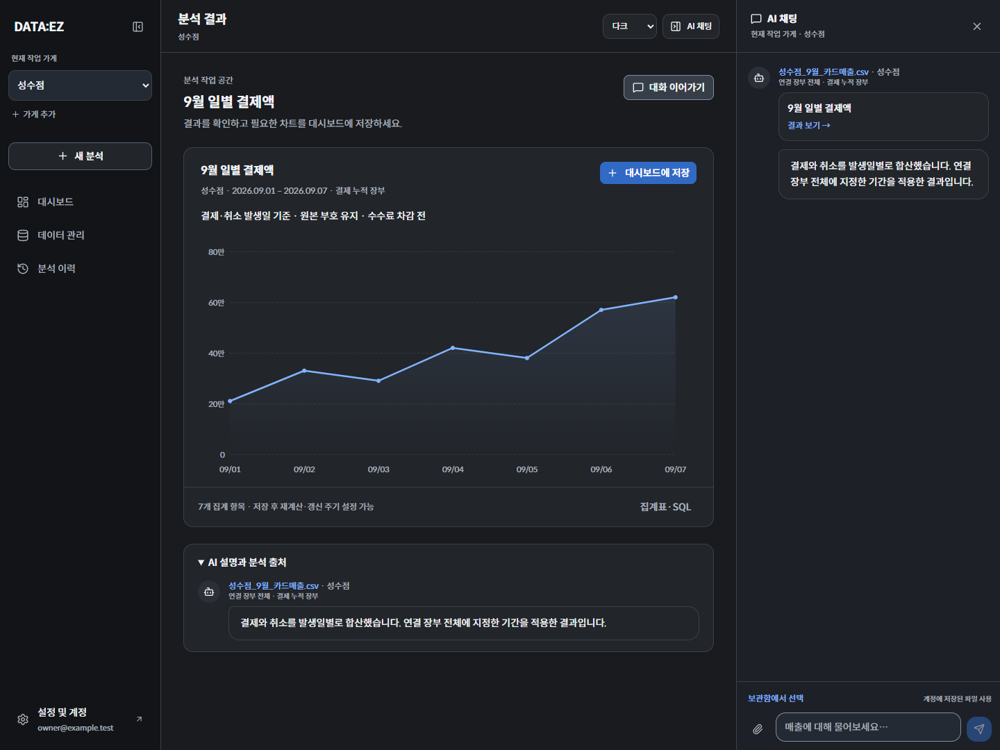

분석 결과·대시보드 · Phase 4
차콜 + 블루, Spoqa Han Sans Neo. 실제 Next.js 앱을 테스트 API 데이터로 실행한 화면 캡처입니다.
분석 결과 · 다크
대시보드 · 다크
대시보드 · 라이트
집계표·SQL
분석 결과 · 모바일
보관함 · 다크
파일 관리 · 라이트
보관함 · 모바일

분석 결과 · 출처·기간 확인 / ECharts 그래프 / 대시보드 저장